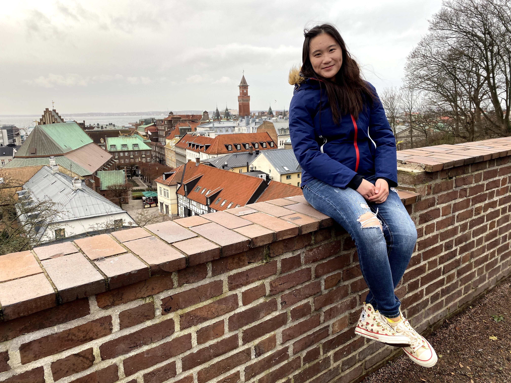
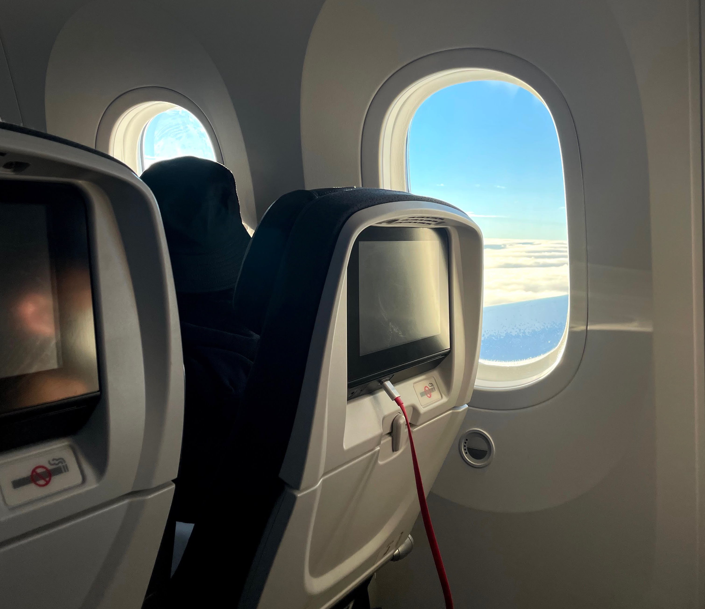

Where am I during the past 3 years?
In December 2019, right before the pandemic, I flew from the States to Sweden for a one-month N.Europe trip.
 Copenhagen, Denmark
Copenhagen, DenmarkI first landed in Denmark, reunited with my mother, and we stayed in Copenhagen for a few days. This city is mixed with royal histories and modern architecture, and biking around the city center was so enjoyable.
 Helsingborg, SwedenWe then cross the border of Denmark to Sweden by taking the "ForSea Ferries." Although we didn't have a chance to visit its capital Stockholm, we love Helsingborg since it is an extraordinary scenic coastal city that retains many historical buildings.
 Iceland
IcelandFor our last stop in Northern Europe, we flew to Iceland, one of the least densely populated countries. We stayed at a friend's house of a family of 5, for 3 weeks!! There are so many nature sceneries- It was by far the most fascinating place I have been to. We were so upset of not seeing the aurora by the time we leave, but we surprisingly saw it on the plane!
And then... the pandemic hit.
 Hong Kong
Hong Kong In April 2020, I decided to go back home. Despite our day-to-day lives are drastically changed by the pandemic, I am thankful that I got to reunite with my family and friends there after being away for so long.
 Vancouver, CanadaFinally, in October 2021, we came back to in person classes! I had a layover in Vancouver for 5 hours before arriving LA. Fun fact- it is also the first time in Canada, haha!
Los Angeles, United StatesForgot to mention- I am also a transfer! So this was also my first year living in LA. So far loving it!